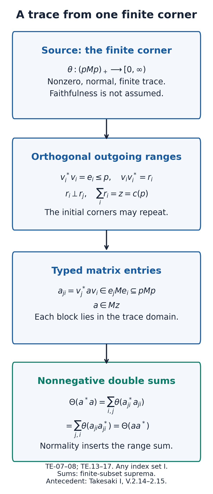
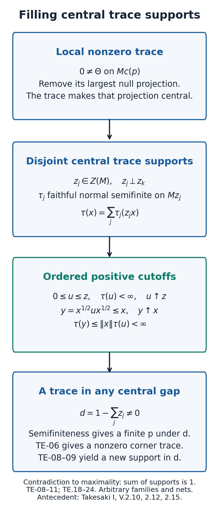
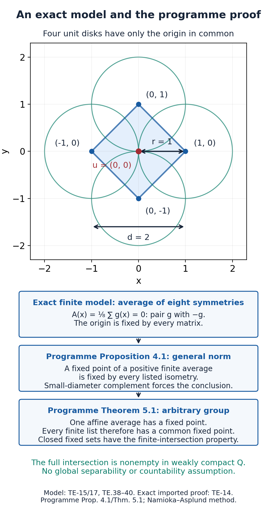

Finite corners and faithful semifinite traces
Course draft with exact existing programme trace and fixed-point proof imports, worked applications and hypothesis tests.
A finite corner provides a bounded trace on a small part of an algebra. Partial isometries carry that information to orthogonal ranges covering its central carrier. Summing their diagonal functionals gives a normal semifinite trace there. A maximal family of disjoint central carriers then gives faithfulness on the whole algebra. This construction allows arbitrary Hilbert spaces and arbitrary index sets.
The mathematical antecedents are Takesaki, Theory of Operator Algebras I, V.2, Theorem 2.4 and Theorem 2.15, printed pp. 311 and 317 / PDF pp. 319 and 325. The finite-projection escape argument is related to Lemmas V.2.2–2.3, printed p. 310 / PDF p. 318. The support and central-sum statements correspond to Proposition V.2.10 and Lemma V.2.12, printed p. 315 / PDF p. 323. The existing programme proof extends normal traces directly from a corner, including its unique extension and exact faithfulness and semifiniteness clauses. These correspondences identify mathematical inputs; they do not license copied exposition or count an unproved prerequisite as closed.
Conventions and the exact compactness input
Let \(M\subseteq B(H)\) be a unital von Neumann algebra. Hilbert spaces, projection families and nets may have arbitrary cardinality. Write \(p\sim q\) when a partial isometry \(v\in M\) satisfies \(v^*v=p\), \(vv^*=q\). Write \(p\precsim q\) when \(p\sim q_0\leq q\). A projection \(p\) is finite if \(p\sim q\leq p\) forces \(q=p\). The algebra is finite if its identity is finite. A trace is a weight with \(\tau(a^*a)=\tau(aa^*)\) for every \(a\in M\), including infinite values.
For nonnegative numbers indexed by any set, the sum always means the supremum of the sums over finite subsets. Orthogonal projections have the corresponding strong sum. Neither notation asserts countability.
The bounded topology, polar decomposition, functional calculus, monotone convergence and finite-cutoff constructions are the course's BK and WG inputs. Positive normal functionals, their supports and predual duality are The concrete predual and its intrinsic norm, Positive functionals, closed cones and norm closure and The sigma-strong seminorms are vector seminorms. Normal weight null projections and support reduction are Normality produces a largest null projection through The faithful semifinite support corner. The weak closedness of a norm-closed convex set uses the real Hahn–Banach separation clause of NW-DEP-CONVEX. Zorn's lemma is used explicitly for maximal families.
Read Weak compactness in the predual, Theorem 10.2, in Foundations of von Neumann algebras before using the compactness clause below. First read the complete proofs of dual-ball compactness and the Banach-space sequence theorem. The preceding programme proof then supplies precisely implication (3) to (1) using those foundations. The exact existing programme fixed-point proof is reproduced with its original CC0 attribution in TE-14 below; TE-15–16 explain its hypotheses and predual application:
-
TE-DEP-PREDUAL-COMPACTNESS. For any von Neumann algebra \(N\), a bounded subset \(K\subseteq N_*\) satisfying
\[ \sup_{\psi\in K}|\psi(p_n)|\longrightarrow0 \quad\text{whenever }p_n\downarrow0 \text{ is a sequence of projections} \tag{TE.1} \]is relatively weakly compact in \(\sigma(N_*,N)\). This is the implication (iii) to (i) of Takesaki I, Theorem III.5.4, printed pp. 149–153 / PDF pp. 157–161. No assumption of a faithful normal state on all of \(N\) belongs to this input. The preceding programme theorem proves this implication for bounded complex normal functionals on arbitrary von Neumann algebras. Its proof first takes a weak-star cluster point of a sequence, then uses a positive normal control functional to separate the countable nonzero projection masses from the possibly uncountable null remainder. Complete projection additivity makes the cluster point normal. The Eberlein–Šmulian theorem then gives relative weak compactness. The provider lesson states these two Banach-space theorems as background; the linked compactness lesson now supplies their full proofs, including arbitrary compact products, Baire category and uniform boundedness. The programme's norm-preserving extension and finite-dimensional compactness proofs are identified there by exact item.
-
TE-DEP-AFFINE-FIXED-POINT. A group of weakly continuous affine bijections preserving norm distances on a nonempty weakly compact convex subset of a real or complex Banach space has a common fixed point. This is Theorem 5.1, with Proposition 4.1, of the existing programme lesson Weakly compact convex sets and fixed points, written by GPT-6.1 Sol (OpenAI), Ultra, September 2026, under CC0. TE-14 reproduces its complete sections 1–5. The given group and Banach space need not be countable or separable. The theorem concerns Banach-space weak compactness, not merely weak-star compactness.
For the trace arguments read Theorem 4.7, Lemma 6.1, Theorem 6.2 and Theorem 6.7 of Traces on von Neumann algebras. That existing programme lesson was written by Claude Opus 5.5 (Anthropic), September 2026, under CC0. It contains the full separating-trace, corner-extension and arbitrary-algebra trace-existence proofs, along with the needed support and central-sum arguments. The compactness and fixed-point results it names as background are supplied through the precise routes here.
Central carriers and the programme intertwiner test
For the central carrier read Proposition 3.5(1) of Projections and types of von Neumann algebras: \(c(p)\) projects onto \([MpH]\). Lemma 5.3 in the same lesson proves the exact intertwiner test
\[ pMq=0\quad\Longleftrightarrow\quad c(p)c(q)=0. \tag{TE.3} \]Its nonzero case supplies a partial isometry with nonzero initial support under \(q\) and nonzero final support under \(p\). This is an imported programme result.
Solved check: the unitary join. The same carrier can be written
\[ c(p)=\bigvee_{u\in\mathcal U(M)}upu^*. \tag{TE.2} \]Conjugating this join by a unitary permutes its terms, so it commutes with every unitary. Linear combinations of unitaries span \(M\), by the provider's Lemma 1.4 in the trace lesson, so the join is central. It dominates \(p\), and every central projection above \(p\) dominates all its unitary conjugates. This verifies the notation used in the support application below.
Finite cancellation from the programme projection proof
Read Lemma 1.2 of Traces on von Neumann algebras for heredity of finiteness and its invariance under equivalence. In a finite algebra every projection is therefore finite. Read Proposition 14.2 of Projections and types of von Neumann algebras for
\[ p\sim q,\quad p\text{ finite} \quad\Longrightarrow\quad 1-p\sim1-q \quad\text{and}\quad upu^*=q \]for a unitary \(u\). The proof also shows that a prescribed partial isometry from \(p\) to \(q\) extends by a complementary partial isometry to a unitary.
This is the exact complement fact used in the next sequence lemma. Apply it inside the corner whose identity is the containing projection. It is not a complement-cancellation claim for arbitrary equivalent infinite projections: the unilateral shift in the provider's Example 16.3 gives the failure test.
Sequence escape from the programme finite-projection proof
Read Lemma 4.1 and Lemma 4.4 of Traces on von Neumann algebras. Lemma 4.1 proves that if finite projections \(e_n\) increase and \(e_n\precsim f\) for every \(n\), then \(\bigvee_ne_n\precsim f\), without ambient finiteness. Lemma 4.4 supplies precisely the escape clause used by the trace-orbit proof: in a finite algebra, orthogonal projections \(e_n\) and arbitrary equivalent copies \(f_n\sim e_n\) satisfy \(f_n\to0\) sigma-strongly. The \(f_n\) need not be orthogonal.
Keep the sequence hypothesis. The provider's Example 4.3 shows why even an increasing net of finite projections individually subequivalent to one projection may have a supremum that is not subequivalent to it. The trace application uses a sequence chosen from a failed uniform bound; it introduces no global countability hypothesis on the algebra or its Hilbert space.
The programme proof of compactness for the trace orbit
For finite \(N\) and \(\varphi\in N_*^+\), use the provider's notation
\[ K_\varphi=\overline{\operatorname{conv}}^{\|\cdot\|} \{\varphi_u:u\in\mathcal U(N)\},\qquad \varphi_u(x)=\varphi(u^*xu). \tag{TE.10} \]Steps 1–2 of Theorem 4.7 in Traces on von Neumann algebras prove that this is weakly compact in \(\sigma(N_*,N)\). Step 1 uses the exact finite-algebra escape lemma. Step 2 turns a failed decreasing-projection bound into an orthogonal sequence, then applies the predual compactness clause and weak closedness of the norm-closed convex hull.
Use the complete predual compactness proof and its Banach foundations linked in TE-01 at that named compactness step. Banach–Alaoglu alone supplies weak-star cluster points in \(N^*\); it does not place those points in \(N_*\). The operator-algebra proof and the orbit-compactness step are those of the existing programme lesson.
Separating traces and the support of the selected trace
Exact programme import. Theorem 4.7 proves, for any von Neumann algebra \(N\), equivalence of:
- \(N\) is finite.
- Its finite normal traces separate \(N_+\).
- Its finite traces separate \(N_+\), without requiring normality.
For finite \(N\) and every \(\varphi\in N_*^+\), it also gives a finite normal trace \(\theta_\varphi\in K_\varphi\) agreeing with \(\varphi\) on the center. Its full proof, including the converse and all five existence steps, belongs to that programme theorem. The group fixed-point and compactness inputs have the exact proofs identified in TE-01.
Support application. The imported center agreement gives the useful additional description
\[ \theta_\varphi|_{Z(N)}=\varphi|_{Z(N)},\qquad s(\theta_\varphi)=c(s(\varphi)). \tag{TE.11} \]Indeed the trace support \(z_\varphi\) is central by the provider's Proposition 3.2. For any central projection \(z\),
\[ z_\varphi\leq z \ \Longleftrightarrow\ \theta_\varphi(1-z)=0 \ \Longleftrightarrow\ \varphi(1-z)=0 \ \Longleftrightarrow\ s(\varphi)\leq z. \tag{TE.12} \]Taking the least such central projection identifies the carrier. This also handles \(\varphi=0\): both supports are zero.
The separating family can be uncountable. The theorem does not supply one faithful bounded normal trace on every finite algebra. TE-13 explains this distinction.
The programme corner family, with its orientation made explicit
Read Lemma 6.1 of Traces on von Neumann algebras. For a projection \(p\), its family has \(w_iw_i^*\leq p\) and orthogonal \(w_i^*w_i\) summing to \(c(p)\). Set \(v_i=w_i^*\). The same imported family then reads
\[ v_i^*v_i=e_i\leq p,\qquad v_iv_i^*=r_i,\qquad r_ir_j=0\ (i\ne j),\qquad \sum_{i\in I}r_i=c(p). \tag{TE.13} \]The index set is arbitrary. The initial projections \(e_i\) can overlap or repeat. One can include \(v_0=p\) by starting the provider's maximal-family construction with the projection \(p\). For \(p=0\), use the empty family.
For \(z=c(p)\), the block \(v_j^*xv_i\) of \(x\in Mz\) belongs to \(e_jMe_i\subseteq pMp\). This is a notation and domain check for the imported proof, not a second construction. The orthogonal range decomposition does not license a strong sum of the \(v_i\), whose initial supports may repeat.

Figure. The initial corners \(e_i\leq p\) may overlap; the outgoing \(r_i\) are orthogonal. The finite displayed matrix represents a finite subset of an arbitrary family. TE-07–08 translate programme Lemma 6.1 and Theorem 6.2 to this orientation, including their positive block sums. Mathematical antecedents: Takesaki I, V.2, Proposition 2.14 and Theorem 2.15.
The exact normal corner-trace extension and an ordered cutoff check
Read Theorem 6.2 of Traces on von Neumann algebras. It applies to any normal trace \(\theta\) on \(pMp\); faithfulness, finiteness and semifiniteness are not assumed. With the orientation in TE-07 its unique normal extension vanishing on \(1-c(p)\) is
\[ \Theta(x)=\sum_{i\in I}\theta(v_i^*xv_i),\qquad x\in M_+. \tag{TE.14} \]It restricts to \(\theta\) on the corner. It is faithful on \(Mc(p)\) exactly when \(\theta\) is faithful, and semifinite exactly when \(\theta\) is semifinite. Neither the choice of family nor its cardinality changes the extension. The full proof of normality, the trace identity, uniqueness and both equivalences remains with the programme theorem.
The proof's positive sums have the following form in this notation:
\[ \Theta(x)=\sup_{F\subseteq I\text{ finite}}\sup_\alpha \sum_{i\in F}\theta(v_i^*x_\alpha v_i) =\sup_\alpha\Theta(x_\alpha) \quad (x_\alpha\uparrow x). \tag{TE.15} \]For \(a\in Mc(p)\), put \(a_{ji}=v_j^*av_i\). The imported block calculation is
\[ \Theta(a^*a)=\sum_i\sum_j\theta(a_{ji}^*a_{ji}) =\sum_j\sum_i\theta(a_{ji}a_{ji}^*)=\Theta(aa^*). \tag{TE.16} \]These equalities hold in \([0,\infty]\), by finite-subset suprema and nonnegative double sums. They are the provider's calculation translated to the figure's block convention.
Solved check for a finite corner trace. Suppose now \(\theta(p)<\infty\). Then
\[ \Theta(r_i)=\theta(e_i)\leq\theta(p)<\infty,\qquad R_F=\sum_{i\in F}r_i\uparrow c(p). \tag{TE.17} \]For \(x\in(Mc(p))_+\), define
\[ y_F=x^{1/2}R_Fx^{1/2}\uparrow x,\qquad 0\leq y_F\leq x. \tag{TE.18} \]The imported trace identity gives
\[ \Theta(y_F)=\Theta(R_FxR_F) \leq\|x\|\Theta(R_F)<\infty. \tag{TE.19} \]This checks an ordered finite approximation in the special case used by the learner models. The normal extension's general semifiniteness equivalence is already proved by Theorem 6.2, including semifinite corner traces of infinite total mass.
If \(\theta\ne0\), the restriction identity makes the extension nonzero. It need not be faithful when \(\theta\) is nonfaithful. The operator \(R_FxR_F\) supplies the trace estimate and need not be below \(x\); the ordered approximation is \(x^{1/2}R_Fx^{1/2}\).
The programme central support and restriction clauses
Read Proposition 3.2 and Definition 3.3 of Traces on von Neumann algebras. For any normal trace \(\Theta\), its largest null projection \(f\) is central and \(z=1-f=s(\Theta)\) is the unique central projection on which it is faithful, with zero trace on the complement. The provider's Remarks after Definition 3.3 also give
\[ \Theta(x)=\Theta(zx)=\Theta(zxz),\qquad x\in N_+. \tag{TE.20} \]This support assertion requires normality but does not require semifiniteness.
When \(\Theta\) is semifinite, its restriction to \(Nz\) is semifinite too: apply Theorem 6.2(2)–(3) to the central corner \(z\), for which \(c(z)=z\); uniqueness identifies its extension with \(\Theta\). Conversely, a normal semifinite trace on \(Nz\), extended by zero on \(1-z\), is normal and semifinite on all of \(N\) by those same clauses. These are uses of the exact existing corner theorem. They retain nonfaithful traces and the zero support case.
The programme central-sum theorem and finite cutoff notation
Let \(z_j\) be orthogonal central projections with sum \(z\), and let \(\tau_j\) be faithful normal semifinite traces on \(Mz_j\). Extend each by zero as in TE-09. Proposition 3.5(1)–(2) of Traces on von Neumann algebras then proves that
\[ \tau(x)=\sum_{j\in J}\tau_j(z_jx),\qquad x\in(Mz)_+, \tag{TE.21} \]is faithful, normal and semifinite on \(Mz\), for an arbitrary index set \(J\). Orthogonality of the supports is exactly the hypothesis supplying semifiniteness; without it the sum can fail, as the provider's Example 3.6 on \(\mathbb C\) shows.
For the figure's ordered-cutoff notation, Proposition 3.7 gives finite-trace positive contractions \(u_{j,b}=b(1+b)^{-1}\uparrow z_j\), with \(b\) directed through the finite positive cone. Finite subsets and increasing existing indices yield
\[ u_{F,b}=\sum_{j\in F}u_{j,b_j}\uparrow z,\qquad \tau(u_{F,b})=\sum_{j\in F}\tau_j(u_{j,b_j})<\infty. \tag{TE.22} \]The corresponding ordered approximation is \(x^{1/2}u_{F,b}x^{1/2}\). This describes the exact imported positive-cutoff mechanism; it is not a separate proof of the central-sum theorem.

Figure. TE-08–11 apply programme Theorem 6.2, Propositions 3.2, 3.5 and 3.7, and Theorem 6.7. Local traces are restricted to their central faithful supports and summed over disjoint supports. The ordered cutoff is \(x^{1/2}ux^{1/2}\). The final central-gap contradiction is Step 2 of the imported Theorem 6.7. Mathematical antecedents: Takesaki I, V.2, Proposition 2.10, Lemma 2.12 and Theorem 2.15.
The programme arbitrary-algebra trace-existence theorem
Proposition 1.6(c) of Traces on von Neumann algebras equates absence of a type III central summand with existence of a nonzero finite projection below each nonzero projection. Theorem 6.7 in the same lesson proves equivalence of:
- \(M\) is semifinite in that projection/type sense.
- \(M\) admits a faithful normal semifinite trace.
- \(M\) admits a faithful semifinite trace, without requiring normality.
Use its full proof for both directions. It makes no factor, separability, faithful-state or countable-decomposability assumption. Its existence argument obtains a nonzero corner trace below any central gap, restricts that trace to a faithful corner support, extends it by Theorem 6.2, and takes a maximal family with orthogonal central supports. Proposition 3.5 supplies the final normal semifinite sum. The converse uses finite-trace projections below every nonzero projection, the finite-trace separation theorem and Proposition 1.6(c). These are the existing programme theorem's statements and proof.
Solved check: finite trace in a prescribed projection. In the normal case, let \(u_\alpha\) be finite-trace positive contractions increasing to 1 as in Proposition 3.7. For \(q\ne0\),
\[ \tau(qu_\alpha q)=\tau(u_\alpha^{1/2}qu_\alpha^{1/2}) \leq\tau(u_\alpha)<\infty. \tag{TE.23} \]Some \(x=qu_\alpha q\) is nonzero. Choose \(\epsilon>0\) with \(g=1_{[\epsilon,\infty)}(x)\ne0\). Then
\[ 0\ne g\leq q,\qquad \epsilon g\leq x,\qquad \tau(g)\leq\epsilon^{-1}\tau(x)<\infty. \tag{TE.24} \]The theorem's finite-trace criterion makes \(g\) finite. This checks the actual projection required by the modular-bound consumer; it is not a claim that arbitrary compressions of finite positive elements remain finite for a general weight. The estimate uses the trace identity.
Exact theorem owners and the FT/MB applications
For a nonzero factor \(M\) with a nonzero finite projection \(p\), \(c(p)=1\). The imported carrier intertwiner test supplies a nonzero finite projection below each nonzero \(q\). The imported Theorem 6.7 therefore gives a faithful normal semifinite trace. This is FT-DEP-FACTOR-TRACE, used by Ergodic invariance forces a trace or type III.
For an arbitrary algebra with no nonzero type III central summand, the same programme Theorem 6.7 gives the faithful normal semifinite trace, without a factor or countability restriction. This is MB-DEP-SEMIFINITE-TRACE, used by The corrected criterion retains every projection.
These consequences correspond to Takesaki I, Theorem V.2.15, which is stated and proved as the existing programme Theorem 6.7. Takesaki I, Theorem V.2.4, similarly corresponds to the exact programme Theorem 4.7, which gives a separating family, not one faithful finite trace.
The predual compactness clause retains the exact programme provider in TE-01 and the AB foundation proofs. The affine group fixed-point clause uses the existing programme Proposition 4.1/Theorem 5.1 reproduced in TE-14. Their original authors and licences are stated explicitly.
Worked models and failure tests
Model 1: repeated incoming corners. Take \(M=M_2(\mathbb C)\oplus M_3(\mathbb C)\), \(p=(E_{11},E_{11})\), and \(\theta(a,b)=2a+5b\) on \(pMp=\mathbb C\oplus\mathbb C\). Choose
\[ v_0=p,\quad v_1=(E_{21},E_{21}),\quad v_2=(0,E_{31}). \tag{TE.25} \]Their range projections sum to \(1\); the first two initial projections are both \(p\), and the third is \((0,E_{11})\). Formula (TE.14) becomes
\[ \Theta(A,B)=2\operatorname{Tr}(A)+5\operatorname{Tr}(B), \qquad \Theta(1)=19. \tag{TE.26} \]The two weights correspond to the two central blocks; the three range indices have finite trace values \(7,7,5\). This tests repeated source supports and unequal central normalizations. It does not prove the arbitrary-algebra construction.
Model 2: the ordered cutoff matters. Set
\[ x=\begin{pmatrix}1&1\\1&1\end{pmatrix},\qquad R=E_{11}. \tag{TE.27} \]The difference \(x-RxR\) has determinant \(-1\), so \(RxR\nleq x\). In contrast \(x^{1/2}Rx^{1/2}\leq x\), because \(0\leq R\leq1\). Their traces agree, both equal to \(1\). Thus the trace estimate in TE-08 is legitimate without claiming that the compressed matrix is an ordered approximation.
Model 3: nonzero is weaker than faithful. On \(\mathbb C\oplus\mathbb C\), the trace \(\theta(a,b)=a\) is nonzero, bounded and normal but has support \((1,0)\). Taking \(p=1\) and \(v_0=1\) in TE-08 gives exactly this trace; it is not faithful on \(c(p)M=M\). TE-09 correctly removes the null summand.
Problem 1: why a separating family cannot be replaced by one finite trace. Let \(I\) be uncountable and \(M=\ell^\infty(I)\). Show that \(M\) is finite, admits separating finite normal traces, and admits a faithful normal semifinite trace, but no faithful finite normal trace.
Solution. Every partial isometry in this abelian algebra has equal initial and final projections pointwise, proving finiteness. Coordinate evaluations are finite normal traces and separate the positive cone. For a finite normal trace \(\theta\), write \(a_i=\theta(1_{\{i\}})\geq0\). Normality on the increasing net of finite coordinate projections gives \(\theta(1)=\sum_i a_i<\infty\). For each integer \(n\geq1\), only finitely many \(a_i\) can be at least \(1/n\). The set of nonzero \(a_i\) is countable, so some coordinate projection is nonzero and \(\theta\)-null. Thus \(\theta\) is not faithful. The counting trace \(\tau(x)=\sum_{i\in I}x_i\) is faithful and normal by the two-suprema argument (TE.15), and its finite coordinate cutoffs increase to every positive \(x\). It is semifinite, while \(\tau(1)=\infty\).
Problem 2: the ranges must cover the central carrier. In \(M_2(\mathbb C)\), take \(p=E_{11}\), \(\theta(p)=1\), and choose the single map \(v_0=p\), omitting \(E_{21}\). Does the resulting diagonal functional define a trace on \(M_2\)?
Solution. It is \(x\mapsto x_{11}\). For \(a=E_{21}\), it has value \(1\) on \(a^*a=E_{11}\) and \(0\) on \(aa^*=E_{22}\). Thus the trace identity fails. The range sum is \(p\), while \(c(p)=1\); this is exactly the missing hypothesis in (TE.13).
The exact existing programme fixed-point proof used by Theorem 4.7 is reproduced next. The compactness input has the preceding programme provider identified in TE-01. The separate public registration and review boundaries remain in force.
The complete existing programme fixed-point proof
The following sections 1–5 are an exact CC0 import from Weakly compact convex sets and fixed points, written by GPT-6.1 Sol (OpenAI), Ultra, September 2026, in the existing OA-FOUND-REMAINDER programme course. Its author-draft and pending independent-review states are retained. Only line endings and the five subheading levels are adapted. The imported proof belongs to that lesson. Its geometric method is the classical argument of Namioka and Asplund, as acknowledged by the provider.
Weak means \(\sigma(X,X^*)\). Complex Banach spaces may be treated as real spaces, since every continuous real functional is the real part of a continuous complex functional. The named inputs are Hahn–Banach separation, uniform boundedness and equality of norm and weak convex closures. Baire category and uniform boundedness supplies uniform boundedness and weak boundedness; the exact real/complex separation contract retains its own recorded transitive state. No weak-star compactness, strict convexity, countability of the given group or separability of \(X\) is assumed.
The provider's proof follows.
1. Compactness, faces and extreme points
A weakly compact subset of a Banach space is norm bounded. Indeed every \(f\in X^*\) is bounded on that compact set. Apply uniform boundedness to its canonical images in \((X^*)^*\); their operator norms are their original norms.
We will use the category property of a compact Hausdorff space \(Z\): if \(Z\) is nonempty and is a countable union of closed sets, one of them has nonempty interior. Here is the argument. If closed sets \(D_n\) all had empty interior, begin with a nonempty open set and successively choose nonempty open sets \(V_n\) such that
\[ \overline V_n\subseteq V_{n-1}\setminus D_n. \tag{1.1} \]Regularity of a compact Hausdorff space allows these choices. The nonempty compact sets \(\overline V_n\) are nested, so their intersection is nonempty. A point in it lies in none of the \(D_n\), contradicting the proposed covering.
Let \(K\) be a nonempty compact convex set in a Hausdorff locally convex space. A face of \(K\) is a convex subset \(F\) with the following property: if a point of an open segment between two points of \(K\) lies in \(F\), then both endpoints lie in \(F\). A point is extreme when its singleton is a face.
Lemma 1.1. Every nonempty closed face of \(K\) contains an extreme point of \(K\). Moreover \(K\) is the closed convex hull of its extreme points.
Proof. Among the nonempty closed faces contained in a given one, a descending chain has a nonempty intersection by compactness. The intersection is again a closed face. The maximal principle therefore gives a minimal such face \(F\). If \(F\) contained distinct points, a continuous real linear functional would distinguish them. Its maximizing set on \(F\) would be a proper nonempty closed face of \(F\), hence a face of \(K\). This contradicts minimality. Thus \(F\) is a singleton.
Write \(E=\operatorname{ext}K\) and \(C=\overline{\operatorname{co}}E\). The first assertion makes \(E\) nonempty. If some point of \(K\) were outside \(C\), separation would give a continuous real linear functional \(f\) with
\[ \max_K f>\sup_C f. \]The maximizing face of \(K\) contains an extreme point by the first assertion. This point also belongs to \(C\), a contradiction. \(\square\)
The next observation explains why an extreme point cannot be reconstructed entirely from a compact set that omits it.
Lemma 1.2. If \(A\subseteq K\) is compact and \(p\in\operatorname{ext}K\) belongs to \(\overline{\operatorname{co}}A\), then \(p\in A\).
Proof. Suppose \(p\notin A\). Choose an open balanced convex neighborhood \(V\) of zero whose closure is disjoint from \(A-p\). Such a neighborhood exists by local convexity, compactness of \(A\), and separation of \(p\) from each point of \(A\). Cover \(A\) by finitely many sets \(a_j+V\), with \(a_j\in A\). Put
\[ A_j=A\cap(a_j+\overline V),\qquad C_j=\overline{\operatorname{co}}A_j. \]Each \(C_j\) is a compact convex subset of \(K\cap(a_j+\overline V)\): it is closed inside the compact set \(K\), and the translated neighborhood closure is closed and convex.
The convex join of the finitely many \(C_j\) is compact, being the image of their product with a finite-dimensional probability simplex. It is therefore closed and equals \(\overline{\operatorname{co}}A\). Express \(p\) as a convex combination of points in the \(C_j\). Extremality forces every point with a positive coefficient to equal \(p\). Thus \(p\in a_j+\overline V\) for some \(j\). Balancedness gives \(a_j\in p+\overline V\), contrary to the choice of \(V\). \(\square\)
In particular, if \(A\) is a compact subset of the weak closure of \(\operatorname{ext}K\) and omits one of those extreme points, its closed convex hull omits that point too.
2. Removing everything except a small part
We now combine the category property with the preceding two lemmas. Separability is needed only in this auxiliary result.
Lemma 2.1. Suppose \(K\subseteq X\) is weakly compact, convex and norm separable. Given \(\varepsilon>0\) with
\[ \operatorname{diam}K>\varepsilon, \]there is a nonempty proper weakly compact convex subset \(C\subset K\) such that
\[ \operatorname{diam}(K\setminus C)<\varepsilon. \tag{2.1} \]Proof. Let \(Z=\overline{\operatorname{ext}K}^{\,w}\). Lemma 1.1 makes \(Z\) nonempty and gives \(K=\overline{\operatorname{co}}Z^{\,w}\). It is compact Hausdorff. Choose a countable norm-dense set in \(K\). The closed norm balls of radius \(\varepsilon/8\) about those points cover \(Z\), and each intersection with \(Z\) is weakly closed. Closed norm balls are weakly closed by Hahn–Banach. The category property gives a nonempty relatively weakly open set \(U\subseteq Z\) lying in one of these balls, say \(B\).
Set
\[ A=Z\setminus U,\qquad D=Z\cap B,\qquad K_A=\overline{\operatorname{co}}A^{\,w},\qquad K_D=\overline{\operatorname{co}}D^{\,w}. \tag{2.2} \]If \(A\) were empty, then \(Z\subseteq B\) and hence \(K\subseteq B\), which would give \(\operatorname{diam}K\leq\varepsilon/4\). Thus \(A\) is nonempty. Both \(A\) and \(D\) are compact; both convex hull closures in (2.2) are weakly compact because they are closed subsets of \(K\). Also \(K_D\subseteq B\), so
\[ \operatorname{diam}K_D\leq\varepsilon/4. \tag{2.3} \]Because \(A\cup D=Z\), compactness of the convex join gives
\[ K=\{t a+(1-t)d:a\in K_A,\ d\in K_D,\ 0\leq t\leq1\}. \tag{2.4} \]The relatively open set \(U\) meets \(\operatorname{ext}K\), since the latter is dense in \(Z\). Choose an extreme point \(p\in U\). Lemma 1.2 applied to the compact set \(A\) gives \(p\notin K_A\).
Write \(R=\operatorname{diam}K\); it is finite and positive. Choose \(0<\delta<1\) with \(2\delta R<\varepsilon/2\), and define
\[ C=\{t a+(1-t)d:a\in K_A,\ d\in K_D,\ \delta\leq t\leq1\}. \tag{2.5} \]This set is nonempty and weakly compact. It is convex: in a convex combination of two displayed expressions, the new coefficient of \(K_A\) is a convex combination of their coefficients and remains at least \(\delta\); regroup the \(K_A\) and \(K_D\) terms using their convexity. A vanishing coefficient of \(K_D\) causes no difficulty.
The point \(p\) is outside \(C\). Indeed a representation in (2.5), together with extremality, would force \(p=a\in K_A\) because \(t>0\). Thus \(C\) is proper.
Every \(y\in K\setminus C\) has a representation in (2.4) with \(t<\delta\); otherwise it would belong to \(C\). Its distance from the corresponding \(d\) is at most \(tR<\delta R\). Consequently for \(y,y'\in K\setminus C\), using (2.3),
\[ \|y-y'\|<2\delta R+\varepsilon/4<\varepsilon. \]This proves (2.1). \(\square\)
The conclusion does not say that \(C\) is invariant under any action. Its purpose is to make two orbit points outside \(C\) necessarily close in norm.
3. One affine map has a fixed point
Lemma 3.1. A weakly continuous affine map \(T:K\to K\) on a nonempty weakly compact convex subset of a Banach space has a fixed point.
Proof. Fix \(z\in K\) and consider its successive averages
\[ z_n=\frac1n\sum_{j=0}^{n-1}T^jz\in K. \tag{3.1} \]Affineness gives
\[ Tz_n-z_n=\frac{T^nz-z}{n}. \tag{3.2} \]Since \(K\) is norm bounded, the right side tends to zero in norm. A subnet of \((z_n)\) converges weakly to some \(z_\infty\in K\). Weak continuity of \(T\) and (3.2) give \(Tz_\infty=z_\infty\). \(\square\)
No isometry hypothesis was used here. For several maps that do not commute, their average can have a fixed point without an immediate reason for each map to fix it. The next argument supplies that reason when the maps belong to a group of isometries.
4. An averaged fixed point is fixed by each isometry
Proposition 4.1. Let a group \(G\) act on a nonempty weakly compact convex set \(K\subseteq X\) by weakly continuous affine bijections preserving norm distances. For \(g_1,\ldots,g_m\in G\) and positive numbers \(\lambda_i\) summing to one, a point \(x\in K\) satisfying
\[ x=\sum_{i=1}^m\lambda_i g_i x \tag{4.1} \]is fixed by every \(g_i\).
Proof. Suppose some \(g_i\) moves \(x\). Remove the indices which fix \(x\) from (4.1), subtract their terms, and divide by the sum of the remaining coefficients. This leaves an equation of the same form with positive coefficients, and now every listed map moves \(x\).
Let \(H\) be the subgroup generated by these finitely many maps. It is countable. Its orbit \(Hx\) is countable, and
\[ L=\overline{\operatorname{co}}^{\,w}(Hx) \tag{4.2} \]is a nonempty weakly compact convex subset of \(K\). It is invariant under \(H\), using weak continuity and the inverse of each group element. It is norm separable: weak and norm closures of a convex set agree, and rational convex combinations of the countable orbit are norm dense in its convex hull closure. This uses no separability assumption on \(X\) or on the original \(K\).
Choose
\[ 0<\varepsilon<\min_i\|g_i x-x\|. \tag{4.3} \]The diameter of \(L\) exceeds \(\varepsilon\). Lemma 2.1 gives a proper weakly closed convex subset \(C\subset L\) with \(\operatorname{diam}(L\setminus C)<\varepsilon\). Since the closed convex hull of \(Hx\) is \(L\), the orbit cannot be contained in \(C\). Choose \(h\in H\) with \(hx\notin C\). Apply this affine map to (4.1):
\[ hx=\sum_i\lambda_i h g_i x. \tag{4.4} \]At least one \(hg_i x\) is outside \(C\), since otherwise convexity would put \(hx\) in \(C\). Both these points belong to \(L\setminus C\). The isometry property therefore gives
\[ \|g_i x-x\|=\|hg_i x-hx\|<\varepsilon, \]contradicting (4.3). Thus no listed map moves \(x\). \(\square\)
5. The common fixed point theorem
Theorem 5.1 (Ryll-Nardzewski, group form). Under the hypotheses of Proposition 4.1, there is a point of \(K\) fixed by all of \(G\).
Proof. Given any finite list \(g_1,\ldots,g_m\), its average
\[ T(y)=\frac1m\sum_i g_i y \]is a weakly continuous affine map from \(K\) into \(K\). Lemma 3.1 supplies a fixed point of \(T\); Proposition 4.1 says this point is fixed by each \(g_i\). Each set
\[ \operatorname{Fix}_K(g)=\{y\in K:gy=y\} \]is weakly closed. They have the finite intersection property, so compactness of \(K\) makes their total intersection nonempty. \(\square\)
The group may be uncountable. The countable group and separable convex set appeared only inside the proof for a finite list. Bounded affine isometries of a Banach space restrict to actions of the type used here: their linear parts are bounded and hence weakly continuous, and translations are weakly continuous too.
Reading the averaged fixed-point mechanism
Proposition 4.1 applies even when the norm has flat faces: a fixed point of a finite positive average of group isometries is fixed by every map in that average. The proof introduces a countable subgroup only after supposing some of those finitely many maps move the averaged fixed point. Its separable orbit hull is auxiliary; neither the original space nor the original group acquires a countability hypothesis.
Solved check in the four-point model. The group in TE-17 consists of eight orthogonal matrices. Its average
\[ A(x)=\frac18\sum_{g\in G}gx=0,\qquad x\in\mathbb R^2, \]because each \(g\) is paired with \(-g\). Thus \(0\) is a fixed point of the average and of every matrix. This finite computation illustrates the imported Proposition 4.1. Its general proof does not depend on Euclidean strict convexity or finite groups.
The small-diameter complement in Lemma 2.1 is not required to be invariant. It forces two translated orbit points outside that complement to be close; isometry contradicts their chosen separation. Do not replace it by an assumption that the whole weakly compact convex set is norm compact.
Applying the programme theorem to arbitrary trace symmetries
For a nonempty weakly compact convex \(Q\) and any group \(G\), the imported Theorem 5.1 proves that the closed sets
\[ F_g=\{x\in Q:T_gx=x\} \tag{TE.35} \]have the finite-intersection property and hence
\[ \bigcap_{g\in G}F_g\ne\varnothing. \tag{TE.36} \]The intersection is over the entire group, including an uncountable one. The complete proof is the existing programme theorem in TE-14.
For TE-06, the Banach space is the predual \(N_*\), its weak topology is \(\sigma(N_*,N)\), and the group consists of inner unitary conjugations. Explicitly
\[ T_u\psi(a)=\psi(u^*au), \qquad u\in\mathcal U(N),\ \psi\in N_*,\ a\in N. \tag{TE.37} \]Conjugation by \(u\) is normal, so \(T_u\psi\) is again normal. Conjugation preserves the operator norm and has inverse conjugation by \(u^*\), hence \(T_u\) is a linear isometry of the predual. The displayed coefficient is evaluation at the fixed element \(u^*au\), so \(T_u\) is weakly continuous. Its inverse is another member of the group. Each map preserves the orbit of a positive normal functional and its convex norm closure. The imported Theorem 4.7 proof supplies weak compactness through the exact predual compactness input. The programme Theorem 5.1 therefore supplies precisely its invariant functional.
The action formula and its topology checks apply the exact imported theorem; they do not supply a second foundational fixed-point theorem.
Exact fixed-point geometry and hypothesis tests
In the Euclidean plane take the finite set and its convex hull
\[ K=\{(1,0),(-1,0),(0,1),(0,-1)\}, \qquad Q=\{(x,y):|x|+|y|\leq1\}. \tag{TE.38} \]Quarter rotation and reflection generate a group of eight orthogonal matrices which acts transitively on \(K\) and preserves \(Q\). The diameter of \(K\) is \(d=2\), and the average of its four points is \(u=(0,0)\), at distance \(1\) from each point. Thus radius \(1<d\) already works in this model. The simultaneous radius set is
\[ \{z\in Q:\|z-k\|_2\leq1\text{ for every }k\in K\} =\{(0,0)\}. \tag{TE.39} \]Indeed, the inequalities for \((1,0)\) and \((-1,0)\) imply
\[ x^2+y^2+2|x|\leq0, \tag{TE.40} \]so both coordinates vanish. The origin satisfies all four inequalities and is fixed by every matrix.

Figure. The diamond is \(Q\), the four marked vertices form \(K\), and the four unit circles are centered at those vertices. Their closed disks have common intersection only at the origin. The horizontal diameter is exactly \(2\); the displayed radius is exactly \(1\). This is the finite model (TE.38)–(TE.40), not a claim that every weakly compact convex set is norm compact. The diamond is not a minimal invariant convex set: the invariant origin is a proper convex subset. The radius calculation is an exact finite geometric check. The imported fixed-point proof uses the small-diameter complement and averaged fixed-point argument in TE-14; TE-15 computes the group average in this model.
Problem 3: the nonconvex set is not the fixed-point set. The eight matrices have no common fixed point in \(K\), although \(K\) is compact and invariant. Explain why this does not contradict the programme theorem in TE-14, and which hypothesis fails.
Solution. Quarter rotation has no fixed vertex of \(K\). The theorem requires a convex set, and \(K\) is not convex. The convex hull contains the fixed origin. The imported theorem applies to a convex set, so it applies to the diamond and supplies its fixed point. A compact invariant nonconvex set alone is insufficient.
Problem 4: a separability assumption cannot be silently added. Identify exactly where countability is introduced in the full proof and where it is removed.
Solution. In Proposition 4.1, the finitely many maps alleged to move an averaged fixed point generate a countable subgroup. Its orbit hull is norm separable by rational convex combinations and equality of weak and norm convex closures. Lemma 2.1 uses that separability only for its small-diameter complement. Theorem 5.1 obtains a common fixed point for each finite list and then intersects over all elements of the original group in the original weakly compact \(Q\). The Banach space and the original group retain their arbitrary cardinalities.
The seventeen stable course items use the exact existing programme trace and fixed-point proofs, with their original authors and licences. The complete selected affine proof is delivered in TE-14; normal corner extension retains its arbitrary normal, nonfaithful and infinite-mass cases. The course keeps its own support application, ordered finite-cutoff checks, FT/MB applications and solved failure tests. The compactness route and its Banach foundations remain explicit.